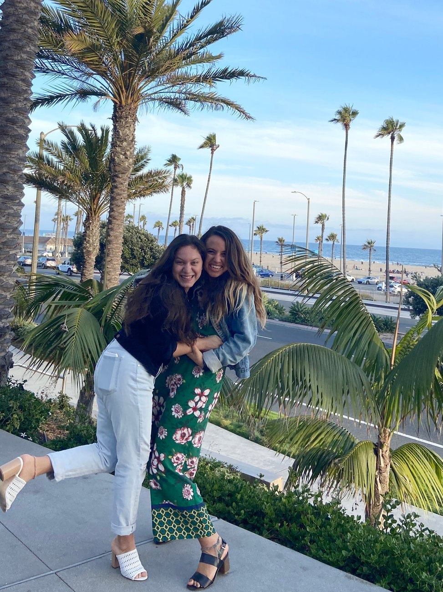
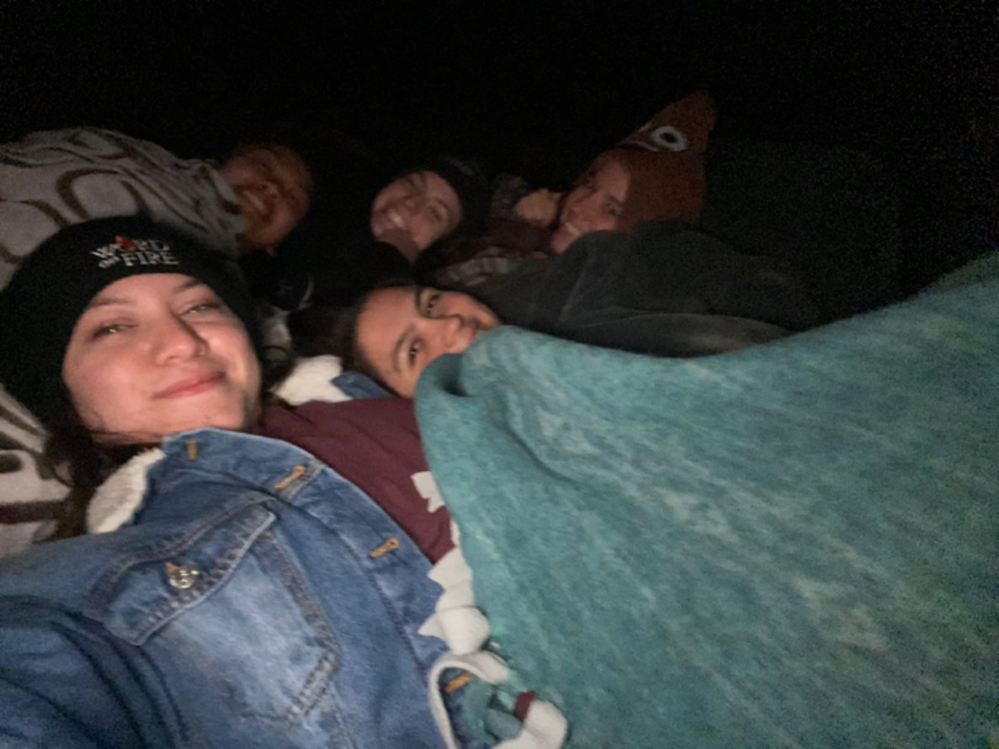
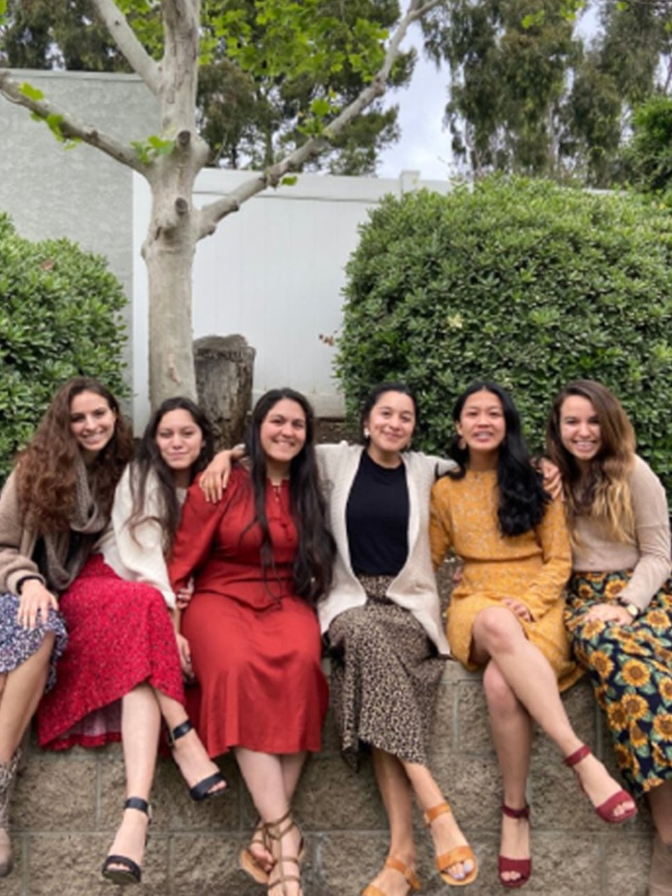
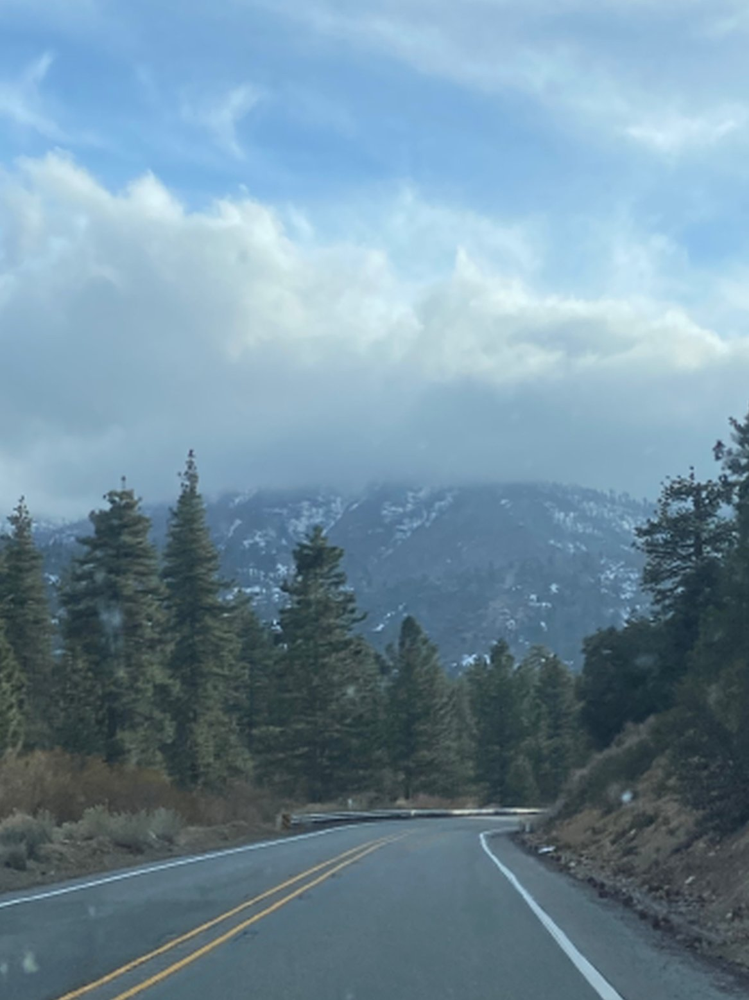

Best Friend
This is my bestfriend Tabitha and I on her 22nd birthday! We were also celebrating becuase she will be a missionary starting this fall!
Joshua Tree
During the beginning of the lockdown, my roomates and I drove out near Joshua Tree to watch the stars and get some time outside of the house.
Easter
Because of COVID, my roomates and I didn't get the chance to go home for Easter, so we spent it together and made some great memories.
Retreat
I went on a retreat this past February for a program called Alpha and it was SO great. It was my last trip before Quarintine.